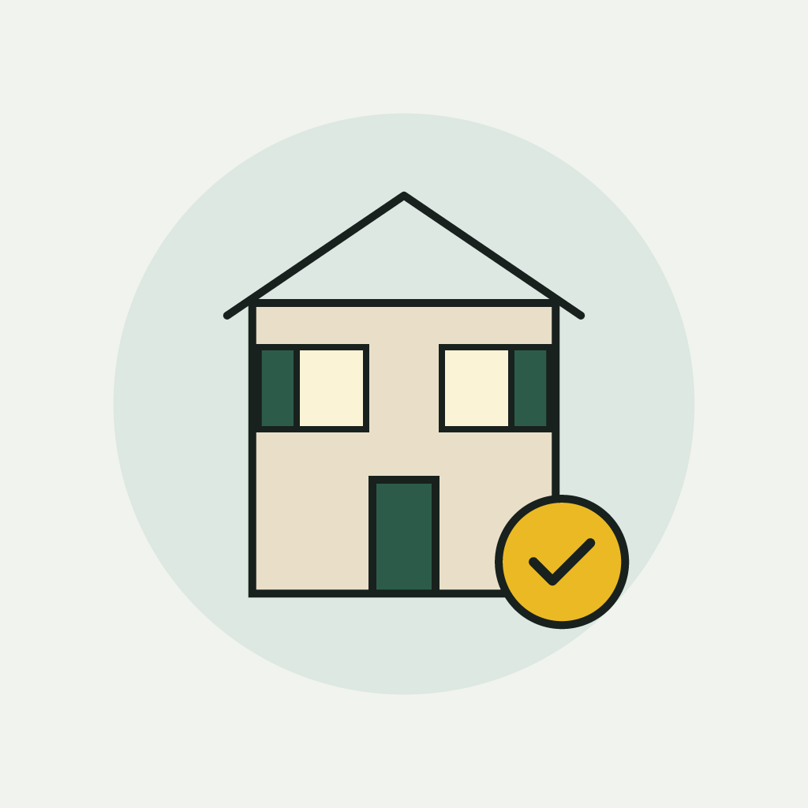

Última atualização: 14 de novembro de 2026
Estes termos (os “Termos”) são um acordo entre ti e Dinis Figueiras (“nós”) sobre o uso da app HouseVisits (a “app”). Ao instalar ou usar a app, aceitas estes Termos. Se não os aceitares, não uses a app.
A HouseVisits ajuda-te a procurar casa para comprar ou arrendar: guardas os anúncios, levas a tua checklist à visita, tiras fotos por divisão, vês uma estimativa do que custa entrar e do que pagas por mês, e comparas as casas. A app não tem contas: o que guardas fica no teu telemóvel.
Damos-te uma licença pessoal, limitada, não exclusiva, intransmissível e revogável para usar a app nos dispositivos que tens ou controlas, para fins pessoais e não comerciais, segundo estes Termos e as regras de utilização da App Store da Apple. Não podes copiar, modificar, descompilar, fazer engenharia inversa ou revender a app, nem usá-la para criar um serviço concorrente, exceto quando a lei o permitir.
Os valores de entrada, IMT, Imposto do Selo, escritura e registo, prestação, condomínio e custos de arrendar são estimativas aproximadas, feitas a partir das tabelas do ano indicado na app, de valores fixos e dos números que tu escreves. Não incluem, entre outros, seguros, IMI, avaliação bancária e comissões. Não são aconselhamento financeiro, fiscal nem jurídico. Antes de tomares uma decisão, confirma os valores com o teu banco, um solicitador, um advogado ou o Portal das Finanças. A nota de cada casa resulta das tuas próprias respostas e da importância que deste a cada ponto, e não é uma avaliação da casa.
As tuas casas, notas e fotos são tuas. Ficam guardadas no teu telemóvel, por isso não as conseguimos recuperar se perderes, repuseres ou desinstalares a app. Usa Definições → Exportar uma cópia de vez em quando. A cópia leva as casas, a checklist e as tuas contas, mas não as fotos guardadas no telemóvel; guarda-a num sítio seguro, porque quem a tiver pode lê-la. Restaurar uma cópia junta as casas que faltam e mantém as que já estão no telemóvel.
Comprometes-te a não usar a app para guardar ou partilhar conteúdo ilegal ou que viole direitos de outros, a não tentar perturbar a app ou os portais que ela contacta, a não fazer pedidos automáticos ou em excesso aos portais, e a não usar a app contra a lei.
A app, o seu design e o seu código são nossos. Os nomes dos portais, as marcas, os textos e as fotos dos anúncios pertencem aos respetivos donos.
Podemos atualizar, suspender ou terminar funções ou a app a qualquer momento. Não garantimos que a app funcione sem interrupções ou erros, nem que consiga ler os anúncios de todos os portais.
A app é fornecida “tal como está” e “conforme disponível”, sem garantias de qualquer tipo, na medida máxima permitida pela lei. Nada nestes Termos limita os direitos que tens como consumidor segundo a lei.
Na medida máxima permitida pela lei, não somos responsáveis por danos indiretos, acidentais ou consequentes, perda de dados ou lucros cessantes resultantes do uso da app, incluindo decisões de compra, arrendamento ou crédito que tomes com base nela. A nossa responsabilidade total por qualquer reclamação fica limitada ao valor que pagaste pela app nos 12 meses anteriores. Isto não exclui a responsabilidade que a lei não permite excluir.
Podes deixar de usar a app a qualquer momento, desinstalando-a. Podemos suspender o teu acesso se violares estes Termos. As cláusulas que, pela sua natureza, devam continuar a valer depois do fim, continuam.
Estes Termos regem-se pela lei portuguesa. Se fores consumidor na UE, manténs também a proteção das leis imperativas do teu país de residência. Antes de recorreres a tribunal, contacta-nos para tentarmos resolver o assunto. Em caso de litígio de consumo, podes recorrer a uma entidade de resolução alternativa de litígios; a lista está no Portal do Consumidor.
Podemos atualizar estes Termos. A versão nova vale quando for publicada, com uma nova data de “Última atualização”. Continuar a usar a app depois de uma alteração significa que aceitas os Termos novos.
Perguntas sobre estes Termos: mrkingames00@gmail.com.